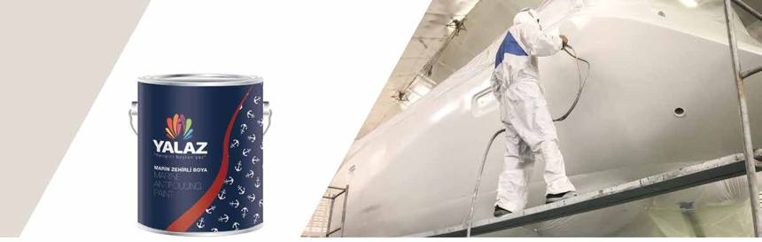

Необрастающая морская краска
Специализированная необрастающая краска для подводной части корпуса судна. Содержит биоцидные компоненты, препятствующие прикреплению и росту водорослей, ракушек и других морских организмов. Обеспечивает защиту на весь навигационный сезон, снижает гидродинамическое сопротивление и расход топлива.